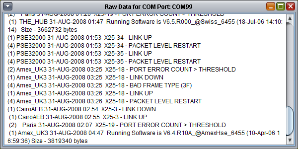

The window will only display data received from the moment it is opened until it is closed.
When the raw data window is closed it will ask whether the output of the window should be saved in a text file. If you don't want this to happen then click No and the prompt as well as the raw data window will close.
If you do want to save the text shown in the window then click on yes. You will then be able to select a file name and directory to save the file as. Once you click OK the data will be exported into a standard text (.TXT) file.